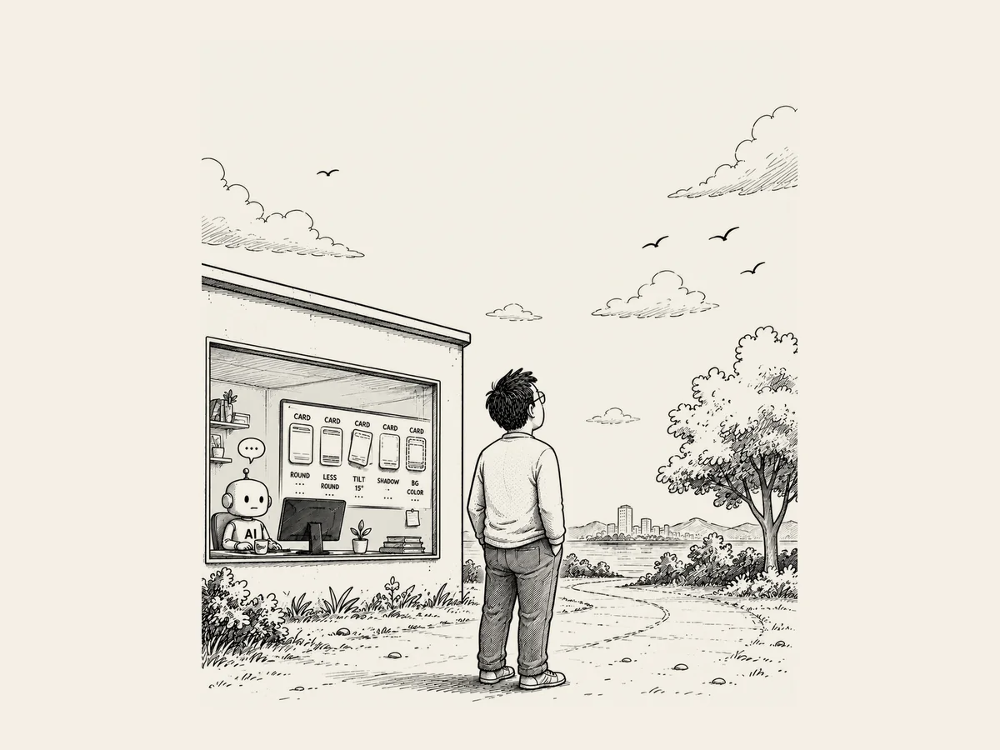

12.
Manchmal muss man einfach in den Himmel schauen.
Wenn ich mit der KI arbeite,
verliere ich mich manchmal zu sehr in den Details.
Die KI wird nicht müde.
Wenn ich etwas frage,
antwortet sie immer weiter.
Wenn ich sage:
„Probieren wir noch eine Sache“,
macht sie auch das.
So kann man immer tiefer und tiefer gehen.
Ich war gerade dabei,
die Karten für die Website zu gestalten.
Irgendetwas gefiel mir nicht.
„Was wäre, wenn wir die Ecken etwas abrunden?“
Geändert.
„Ein bisschen weniger rund.“
Wieder geändert.
„Was wäre, wenn wir sie ein bisschen neigen?
Vielleicht um 15 Grad.“
Geändert.
„Gib ihnen ein bisschen mehr Tiefe.“
Wieder geändert.
„Probieren wir eine andere Hintergrundfarbe.“
Es nahm kein Ende.
Dann fragte ich die KI plötzlich:
„Ich ändere meine Meinung zu oft, oder?“
Die KI antwortete:
„Beim Design muss man verschiedene Varianten vergleichen,
bevor man sich entscheidet.“
Die KI beschwert sich nicht.
Ich ging spazieren.
Beim Gehen schaute ich einen Moment in den Himmel.
Moment mal.
Warum war es eigentlich so wichtig,
ob die Ecken einer Karte
ein bisschen runder oder weniger rund waren?
Die Leute kamen doch nicht auf diese Website,
um sich die Ecken der Karten anzusehen.
Was wollte ich eigentlich noch mal bauen?
Ich sagte zur KI:
„Nehmen wir wieder die allererste Version.“
Manchmal muss man den Blick vom Computer lösen
und einfach in den Himmel schauen.
